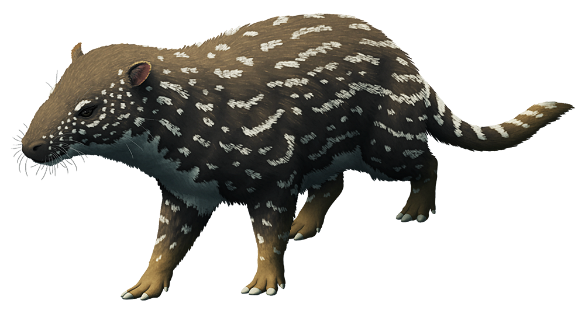

Gastornis is een geslacht van uitgestorven grote vogels dat tijdens het Paleoceen en het Eoceen (61-40 miljoen jaar geleden) leefde. Soorten uit dit geslacht leefden in zowel West-Europa als Noord-Amerika. De gangbare gedachte is dat Gastornis met zijn grote snavel en sterke poten paardachtigen en andere hoefdieren overmeesterde, maar het is echter niet geheel zeker of Gastornis een carnivoor was. Sommige wetenschappers menen dat het dier zijn scherpe snavel gebruikte om planten door te snijden.

Phenacodus is een geslacht van uitgestorven zoogdieren uit het Boven-Paleoceen tot het Midden-Eoceen, ongeveer 55 miljoen jaar geleden. Het is een van de vroegste en meest primitieve hoefdieren, typerend voor de familie Phenacodontidae en de orde Perissodactyla.De typische Phenacodus primaevus was een relatief klein hoefdier van ongeveer anderhalve meter lang en een gewicht tot zesenvijftig kilogram, licht van gewicht, met rechte ledematen die elk in vijf volledige tenen eindigden en op de manier van de moderne tapir liepen. De middelste teen was het grootst, en het gewicht van het lichaam werd hier voornamelijk op ondersteund en de twee aangrenzende tenen, die lijken te zijn ingekapseld in hoeven, duidden op het tridactyle type gebruikelijk bij perissodactylen en bepaalde uitgestorven groepen hoefdieren. De schedel was klein, met verhoudingsgewijs kleine hersenen en de gebogen rug, sterke lendenwervels, lange en krachtige staart en betrekkelijk zwakke voorkwarten verkondigen allemaal verwantschap met de primitieve carnivoren Creodonta. Alle botten van de ledematen zijn gescheiden en die van de carpus en de tarsus wisselen elkaar niet af - elk in de bovenste rij wordt direct boven de overeenkomstige in de rij hieronder geplaatst. De volledige reeks van vierenveertig tanden werd ontwikkeld en de bovenste kiezen waren kortgekroond of brachyodont, met zes lage knobbels, twee interne, twee tussenliggende en twee externe, zodat ze de typische primitieve bunodontstructuur hadden, geschikt voor het eten van vruchten en fruit.

Found in small numbers within the Island's colder regions, Chalicotherium obsidioequus is normally a peaceful herbivore that prefers to spend its days lazing about or playing with its family. It is very territorial, however, and the entire family, young and old, will turn against an encroaching creature at just the slightest provocation. A memorable scene to stumble upon is a group of Chalicotherium playing. One odd playtime activity for Chalicotherium is hurling large balls of snow or.. mud-rocks(?).. at each other. Smaller creatures in the area shy away from Chalicotherium during this exertion, for fear of being buried in snow or "gravel."